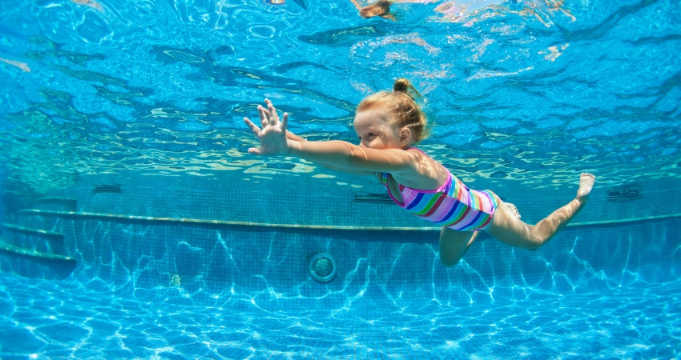

5 benefits of children's swimming
Known for being a complete sport, swimming contributes to the health of
children and adults when guided in the right way. See below the main
benefits of swimming in the first years of life.
- Stimulates psychomotor development
Children's swimming helps to improve the physical capacity and skills of
the child, contributing to the evolution of balance, coordination of
upper and lower limbs and agility. The improvement of motor coordination
allows the child to move in a more controlled way and exercise their
strength in a healthy way.
- Prevents and fights obesity
Children's swimming offers a playful, physical and fun activity for
children, working various parts of the body without the risk of major
impacts and without damaging the joints. Even obese children adapt well
to the sport, as it is lighter compared to exercises such as running and
volleyball.
- Strengthens cardiorespiratory capacity
The practice of swimming teaches children exercises that help control
their breathing so that they can swim. These exercises strengthen the
diaphragm and cardiorespiratory capacity that influences the body's
oxygenation, in addition to increasing the body's immune resistance.
- Prevent accidents
Swimming is one of the most useful children's skills. You know those
holidays when the family goes to the beach or pool? If the child knows
how to swim, the safety of the ride and the possible prevention of an
adverse situation is intensified. But be careful, knowing how to swim is
not a guarantee of safety, it is a prevention. It is important to have
adult supervision during children's play in any location.
- Help with socialization
A prática de esportes facilita a socialização das crianças, pois
incentiva a vivência em grupo e a criação de novos vínculos de amizade
com mais facilidade.
What is the best age to start infant swimming?
According to the Brazilian Society of Pediatrics, it is recommended that
children start swimming lessons from 6 months of age. It is important to
emphasize that in children's swimming, the age of the child determines the
approach during lessons. Below, we separate the 4 phases of children's
swimming that address different aspects of sports practice for children.
- First phase
It is the baby's adaptation to the liquid environment. Going from 6
months to 2 years, it must be guided so that the child experiences and
feels the water, mastering body movements and, over time, learn to
breathe underwater.
- Second phase
From 03 to 04 years old, it is the phase in which the child learns to go
from one point to another. Already with swimming movements, but in a
“straight line”.
- Third phase
Here, children range from 05 to 06 years old. This is the phase in which
they work on the different styles of swimming, the movement of the arms
and lateral breathing.
- Fourth phase
It is the stage of perfecting swimming styles, for example, backstroke,
butterfly etc. Here, it covers children from 7 to 12 years old.
Contraindications for the practice of infant swimming
As it is a complete and dynamic exercise, there are rare situations in
which children's swimming is not recommended. In the case of children
who fit the situations below, the best thing to do is to consult the
pediatrician for guidance.
- Asthma
- Bronchitis
- Otitis
- Sinusitis
- Pharyngitis
- Skin problems
read the full article here.